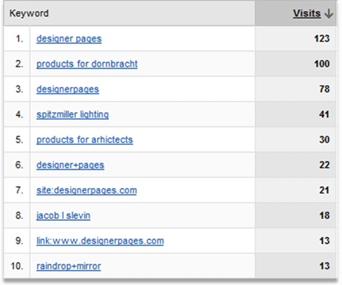
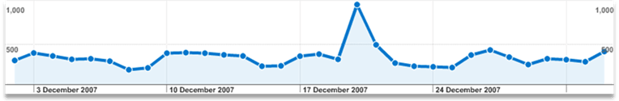
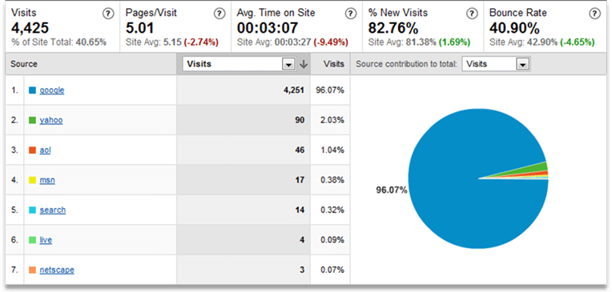
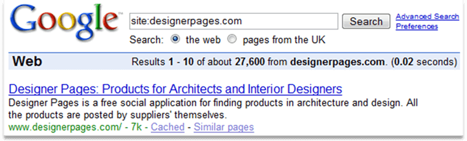
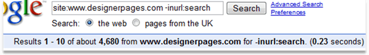
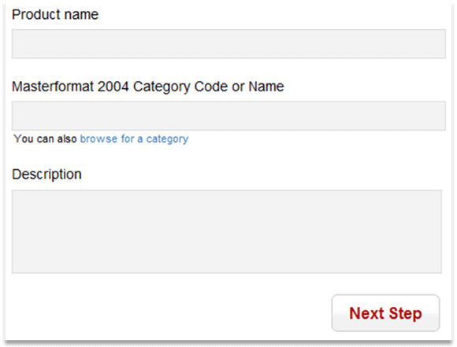
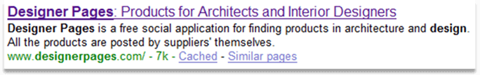
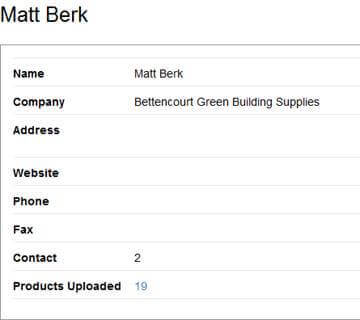
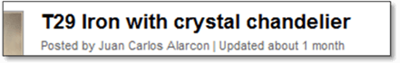

This document is confidential and produced for the sole use of designerpages.com, and cannot be passed in part or entirety by any means to any other party without the express permission of
disclosed here for educational use under
CC-BY
license by the author.
Introduction
The market for designerpages.com is vast. User base in the industry is well educated to work with web applications. SEO campaign aims to enable this user-base to find our project.
Rounded SEO strategy will ensure that users will find the quality content of Designer pages for a selection of relevant targeted keywords and high volume of relevant long-tail searches.
Have a cup of coffee before you'll read further and let’s start to play.
Campaign goals
- Increase the traffic to 1000 visitors a day. In other words triple the traffic. (Timescale 4-6 months)
- Increase the number of daily organic visitors from Google from current 200 to 500. (Timescale 3-4 months)
- Increase the number of registered users from the current 1000 to 2000. Double the user base (Timescale 3 months)
These goals will serve as a measure of the success of the SEO campaign.
Statistics
Top keywords
The following table shows top keywords delivering traffic to the website from organic search in December. Search sent 4,463 total visits; Out of which “top 10 keywords” delivered only around 8% of the traffic. Most of the traffic to the website is from long-tail searches.

All Visitors
The following graph shows traffic levels to the site from all sources including organic search. Peak in traffic on December the 20th was caused by referrals from designspongeonline.com

Search engine split

Search engine split shows that website is optimised better for Google, leaving the important players on the market far behind. The current overall search market share of Yahoo in the US is far higher (around 30%). This reveals that Yahoo rankings suffer from negative effects of some of the factors detected on the site. It is duplicated content and type of navigation. We’ll get back to this below.
Number of indexed pages

Number of indexed pages (picture above) revealed that most of the content in Google index is the wrong kind of content: internal search results (see command on the picture below). 9600 new pages have been indexed since the start of the campaign last week out of which 2000 are products.

On-site optimization techniques
The following chapter will focus on long-tail SEO strategies with user-generated content.
Note about headings
When I refer to the first heading in this document, please read “headline of the current page”.
We also need to explain this issue to search engines. In HTML, please change
<h1 id="logo"><a href="/">Designer Pages</a></h1>
to
<div id="logo"><a href="/">Designer Pages</a></div><hr>
and shift the other headlines one level up so that title/name of the current page or product becomes the first heading <h1> in HTML structure. Alter your style sheet to reflect changes.
Product pages
Educate your users with simple hints and unobtrusive validation and have a few thousand SEOs working for you. The following suggestions refer to the product pages and interface for uploading products.

- Product name
- Users need to know that titles should be “Pearls of clarity”. They have 40-60 characters to explain what the product is about. Unless the title explains the product clearly, no one will ever find it. Yes, pictures in internal search results are useful, but they are not displayed in public search engines. Many suppliers are not aware of this issue and enter only their internal product code or unknown brand name in the title. Explain suppliers to use language of searchers in the product names. Brand names are OK only together with a few descriptive words.
- Categories
- This is the best category selection form I have seen on the web so far. Only if the other fields used this approach to hints and validation. Brilliant.
- Description
- Increase the height of the
<textarea>so that user recognizes the need to include more comprehensive information here. Add controls for subheading, ordered list, unordered list and strong emphasis. This will give users more control over long descriptions and help them to include so much needed comprehensive data. Give users a hint similar to the following: The more comprehensive and unique information you include the higher chance that designers will find your product. There is more about these issues below. - Short description
- This will be a new optional field, only 150 characters allowed. The short description will be used as snippet in internal search results (and new tag pages) and pulled from the database to product page’s <meta description>. You may want to give users a hint similar to the following: This 150 letters is what thousands of designers will flick over in less than a second in the search results. It’s a good idea to make it unique per product and compelling. If you don’t use this short description below, we’ll display in our search results the first few words of your proper description. The short description with the hint will help to get rid of duplicate content issues on the “new tag and category pages” and will produce compelling snippets in Google results as we will pull it to the Meta description tag. First few words of the copy are also believed to have a very strong impact on rankings of the page. This should help the suppliers to understand that keyword poor “numbers and sizes” are not exactly what they wanted to write for a start. Alternatively Javascript can be used to preview the first 150 characters of the description linearised allowing users to imagine their product search listing.
- Next step
- Validation is needed at this point, although unobtrusive validation should guide users through the process. Have you tried to submit empty form? There is probably an error. I've noticed that some of the suppliers copy and paste the same description for every product, which is more detrimental than helpful. Validation should recognize this and tell the supplier off.
- All the user-submitted images
- ...need to have their own alt attribute, which should describe in up to 7 words what’s on the picture. This is slightly different from the product name. Many product names are just a brand name irrelevant to designers who don’t know the brand. Search engines do not recognize objects and text within the pictures. If supplier decided not to describe the picture, product name needs to be pulled to the alt attribute. Suppliers should be aware that picture description is useful.
Do not forget to tell your suppliers that the better they document the product, the higher ranking and popularity will the product receive in your search. Just like Google does.
Google.com explained webmasters how to gain rankings so they could optimize their sites for Google, game it and popularize the service. Even today some Googlers call SEOs "the power users".
More Product description suggestions
Limited rich formatting within the product description should be allowed. Especially...
- Subheading
<h3> - Ordered list
<ol> ..<li> - Unordered list
<ul> ..<li> - Strong emphasis/bold
<b>
...would allow suppliers to use more of the data from their PDF specifications and increase the value of those pages for Search engines (yes, and readability for human users).
Subheadings within the product description should be <h3> tags (after the shifting). One level of subheadings is sufficient for product descriptions.
It is important to offer only limited control over the product description formatting so that the feature can’t be abused to insert links, CSS, JavaScript or SQL injections (or just unprofessional design). You may want to use Textile or Markdown filters and include hints within the interface to guide users how to use the formatting. WYSIWYG/WYSIWYM can be hard to implement this way, but please consider it as well. Users won’t need hints to use it.
Guide users to post product specific descriptions and describe how the particular product differs from the others. This should avoid duplicated text descriptions.
You may want to find out more about form hints design and use Levenshtein Distance function (Rails Gem) to compare similarity of descriptions.
Meta data
Meta description tag needs to be unique per page.
I suggest keeping the Meta description only on the homepage for now. Site-wide Meta description does not add value to the pages and in some scenarios it might cause displaying of irrelevant snippets in Google search results and decrease the click-through rate.
The Meta description of the homepage needs to be the best possible description of your site in 150 characters. Many marketers stuff keywords in the description making it nearly unreadable (it worked a few years ago). They are overlooking the fact that now Meta description has very low effect on the rankings.
Meta description on the homepage is what designers or suppliers read when they search for your brand name. Make this explain what the site is about and make it compelling.

Meta descriptions for product pages need to be pulled from the new “short description” column or not used at all.
Tag names should be pulled into the <meta keywords/> tag. This tag is still believed to have small impact on Yahoo rankings.
Duplicated content in and within categories, search and product pages
Internal search result pages are currently the main SEO problem on the Designerpages.com. Google actively discounts this sort of pages. They need to index them only to find new links, yet currently it is the only way to index products.
Search engines aim to display diverse and relevant results with regards to many factors. Therefore duplicates in their results are not acceptable. The main opportunity of the campaign is to improve architecture of the site so that volume of duplicated content generated by the application is minimal. This should help remove associated search problems and grow rankings for relevant pages.
Most of the duplicated content is remixed within current search results, category and tag pages. Therefore it is needed to action those first.
Proposed process to improve findability
- Move the current search system to different URL and block this URL in robots.txt
- Create alternative Category AND Tag pages with search engine friendly URLs without the filtering functions
- Utilize value of the old indexed search pages and redirect them permanently to the new tag and category pages
New search URLs (blocked)
Google needs to see only a small number of lists from which it can reach the page for each product.
At present the tag pages and the search pages such as
/products;search?tag_id=1314
are part of the same advanced search system.
If another tag is added to the URL to filter the results it can be
/products;search?tag_id=1604&q_tags=1314 or even
/products;search?tag_id=4386&q_tags=1314%7C%7C1604%7C%7C4385
This detrimental issue is described in this Google support article.
Google webmaster guidelines offer a partial solution:
Use robots.txt to prevent crawling of search results pages or other auto-generated pages that don't add much value for users coming from search engines.
There is the robots.txt file needed
User-agent: * Disallow: /search Disallow: /beta
Maybe, you’ve noticed that robots.txt file above seems to be wrong. In fact /products;search is the current address of search results. The example of the file is correct. We will need to block the address of the “new search”, which will be the same search on a different URL.
Unfortunately, blocking will only prevent Googlebot crawling further results. It will not remove search pages already indexed. We need a different treatment for those.
Separate categories and tag pages
Tags
- URL of the new tag page should be
- /tag/*tag-name*
- Title tag of the tag page would be ideally.
<title>*tag name* on Designer Pages</title>- First heading
- <h1>*tag name* products</h1>
- Links
- The links on the product pages will need to link to those new tag pages to make sure they are crawlable.
Suppliers should be limited to use no more than 5 tags per product to make sure the system is not abused.
Categories
- URLs of the new category pages should be
- /*category-name*
- /*category-name*/*subcategory*
- /*category-name*/*subcategory*/*sub-subcategory*
- Title tag of the category page page would be ideally.
<title>*category*</title><title>*subcategory* < *category-name*</title><title>*sub-subcatogory* < *subcategory* < *category*</title>- First heading
- <h1>Current category name</h1>
- Links
- Category pages need standard breadcrumb trails, the top categories should be listed on the product page or other important page
Yahoobot “Slurp” should be blocked from using the tag pages as well as it does not respond well to non-navigational links. Please do not offer search filtering on the tag and category pages.
301 redirects
This step is needed to remove volume of detrimental pages from the index quickly and utilize their value.
Each of the old search URLs needs to be redirected to the most relevant and similar page using the 301 permanent redirect. This could be a “new tag page”, “new category page” or the most relevant product page.
Poorly optimised anchor texts and internal linking
Anchor text or the inbound link is the most important off-page element used by search engines to determine relevancy of a page for a particular search term. Categories, search results, tag pages and other navigation related pages do not use optimal anchor texts to link to product pages. As a result search engines are unable to correctly estimate relevancy of product pages for a particular search terms, however many more factors are involved. This can be fixed with a different structure of the anchor texts based on the extensive keyword research. Keyword research could be used to produce guidelines and help users name the products correctly so that they are easier to find in the internal and external search engines. This will require unobtrusive changes in the application interface.
Link to related products from the product page
Links to similar products should be displayed on the product page to help search engines associate products with the right keyword themes and help to increase rankings of popular products. Off course this will also help users to discover related products.
Here are some ideas on how to query for related products:
- People who saved this product also saved
- Most popular products from this supplier
- Most popular products with related tags
High volume of detrimental temporary internal redirects #302
This issue is now resolved. Just to reiterate:
Temporary redirects do not pass value of links to the appropriate pages and therefore cause search engines serious problems in determining the importance of the product pages. These were changed to search engine friendly permanent redirects (code 301) in the first week of the campaign. Soon after this change search engines indexed 5000 new pages.
Poorly optimised micro-content
- Title tag
- Anchor texts of inbound links
- Heading 1
- First few words of the unique copy on the page
- URL
- Alt texts
...are believed to be most important SEO elements, where you want to place your keywords.
Most of the issues regarding those elements were explained above. Some more tips follow:
Unique title tags
Every title tag needs to be unique and descriptive. Google typically displays the first 50-60 characters of a title tag, or as many characters as will fit into a 512-pixel display. The rest is truncated.
You may want to use validation to limit the length of the product name to 60 characters.
In case the title tags are puzzled form more pieces, put the unique pieces first. See the implementation of the Title tags for category pages.
Heading 1
This is usually the unique part of the Title tag, which is absolutely unique per page.
Anchor texts of inbound links
Most important factor for Google used to determine relevancy of the page.
First few words of the unique copy on the page
This is where search engines presume to find meat and potato of the page.
Alt texts
MSN/Live search (now Bing.com) seems very sensitive to first alt text on the page. High volume of pages ranking well in MSN use the keypharse in the image alt text. It's possible MSN algorithms assume that first or largest image on the page best describes what the page is about. This makes a lot of sense as most e-commerce sites use big product image with relevant alt texts.
Two versions of the URLs www and non-www
This issue has been resolved. Just to reiterate:
Two URL types produce unnecessary detrimental canonicalization issues (related to duplicated content) and need to be adjusted so that one version of the URLs (E.g. the version without www) redirects to the other version of the URLs.
Note: Updated to include proper handling of a redirect to SSL version.
The NGINX configuration to achieve this is as follows:
server {
listen 80;
listen 443;
server_name designerpages.com;
return 301 https://www.designerpages.com$request_uri;
}
server {
listen 80;
server_name www.designerpages.com;
return 301 https://www.designerpages.com$request_uri;
}
server {
listen 443;
server_name www.designerpages.com;
...
}
News section
Flowing pagerank to external sites in the news section turned out to be less detrimental than originally thought as there is no backlog in the news section and links are not submitted by untrusted users.
First heading should be changed to News in architecture and design. Title tag should be subsequently changed to <title>News in architecture and design at Designer pages</title>
Second heading “Headlines from the Grapevine (your favourite blogs in architecture and design)” could be changed to: Our favourite blogs in architecture and design.
Site does not reveal valuable data such as profiles to search engines
Volume of unique data from user profiles is completely hidden from search engines. Revealing this data to the search engines the right way will significantly increase visits to the site as it will appear in the search results for a wider range of terms.
Brand/name searches are among the keywords with highest click-through rate and conversion rate. You can recognize it yourself as “designer pages” is the best performing keyword for designerpages.com.
From this perspective it is not a clever decision to completely hide supplier details unless user is logged in. There are probably many suppliers without their own SE friendly website. Hits from searches for those would mean additional traffic.
Additionally Google spiders collect contact details in vcard format and associate them with source pages. This data is used in Google local search and Google Earth.
The product pages should display at least location (city/town/country) of the product supplier for not-logged in users. It would be also helpful to display name of the company.
Location and brand based searches create a long-tail of search with high potential for incoming traffic.
Profile page issues
There is a sample page: /people/678-Matt-Berk

- City, state/province and country should be required. This will help designers to determine where the supplier is located and whether it is possible to use his products in the project. This data is also needed to get products ranking for local searches. Additionally in a situation where a supplier uploads e.g. 1000 products, his profile will be a strong page and it will most probably rank in search engines in the top results for terms like “interior design Florida”, “architecture New York”, see the new note below about how to construct page titles.
- Display the placeholders only if the data for the placeholder is available. This can be expressed in Rails with the view code similar to the following snippet:
<%if @user.phone != "" %><div>Phone: <%=h @user.phone %></div><%end%>
so as to avoid displaying empty placeholders, see above. - Title tag for the profile should ideally match the following pattern:
<title>*first name* *last name*, *job title* *city* *state/province* at Designer pages<title>or
<title>*company* *city* *state/province* *, country if different form US* at Designer pages<title>
if the company name is available. - Fist heading in the profile should contain company name if this is available or name and job title if available.
- Links to new untrusted user’s homepages could have
rel=”nofollow”to prevent spam.
Offsite Optimization
Following are the key factors contributing to the value of a link in gaining search traffic:
- the anchor text & age of the link
- the strength & relevancy of the linking page
- the age & authority of the linking site
Constantly throughout the campaign I seek to increase the amount of links pointing to the Designer Pages, focusing on both quality and quantity of links.
- Sourcing Links (free and paid)
- Identifying and sourcing the highest quality and best value links, to be pointed towards your site is a priority.
- Key Paid Directories
- Making sure your site is placed in the top paid directories, making best use of the links with keyword rich anchor text.
- Free Directories
- Securing manual submissions to the extensive list of free directories at a steady and consistent rate throughout the life of the contract.
- Niche Directories
- Identifying niche, geographic and market sector directories, and make sure that the Designer Pages is placed in them.
- Web 2.0 opportunities; social web, bookmarks, forum and blogging opportunities
- These all are used.
- XML sitemaps
- will be used to complement traditional information architecture techniques when all relevant pages will be picked up by the search engines using internal navigation.
- News/Article submissions
- Press releases and news articles will be submitted to relevant aggregators as provided by Designer Pages. This depends on the precise nature of the articles and press release provided.
Inbound links
Addressed by ongoing link-building campaign.
- Blog-advertising
- Sponsored posts and reviews
- Manual directory submissions
- building industry relationships with trustworthy website owners such as “.edu” and “.gov” sites
- Social media
These are the current link-building strategies used for designerpages.com.
Using updating services
Designerpages.com do not use remote procedure calls (XML-RPC) and pinging when products and uploaded and updated. Remote procedure calls are widely used in blogging engines. However it is a clever way to get regularly updated and growing content into search engine indexes.
Please check the following resource for hints how to implement RPC
http://codex.wordpress.org/Update_Services
XML-RPC can be implemented for all products and user-profiles.
Rounded link building strategy will treat issues such as low pagerank and lack of inbound links. There are many market opportunities and services used to deliver quality and relevant inbound links for the site.
Keyword benchmarks
Google does not serve more than 1000 results for any query. For this reason we needed to work on link-building and quick-wins before it was possible to benchmark any positions.
At present the designerpages.com website can be found on the following positions for some of the generic targeted keywords in Google (UK).
These benchmarks will serve as an additional measure for success of the campaign.
- #93 “designer products”
- #342 “interior designers”
- #353 “interior designer”
- #183 “products in architecture”
- Not in first 1000 “interior design”
- Not in first 1000 “designers”
- Not in first 1000 “architecture”
Positions for generic keywords are important from the benchmarking perspective as they show the overall strength of the site in terms of search engine rankings.
Competitor analysis
Looking at some of these companies in more detail will help us identify opportunities and threats.
| Google indexed pages | Google backlinks | Yahoo indexed pages | Yahoo backlinks | |
|
http://products.construction.com Fortunately for us this site does not have unique titles for product pages and generates way too complicated URLs. |
22,800 | 376 | 8630 | 4,320 |
|
The site has 12 years old domain name, thought it does not host product information and links to products offsite. Lots of content is hidden from search engines within images and search unfriendly formats. There is a link-building opportunity at http://www.arcat.com/architectural_resources.shtml |
42,900 | 476 | 71,500 | 40,700 |
|
www.architonic.com: The site has lots of quality backlinks. Competitor backlinks data is a good resource to inspire our link building campaign. |
228,000 | 1,060 | 653,000 | 149,000 |
|
www.reedfirstsource.com |
25,200 | 20,700 | 109,000 | 1,270,000 |
|
www.todl.com |
201 | 8 | 201 | 297 |
|
www.firstdibs.com |
n/a | n/a | n/a | n/a |
|
www.aecinfo.com |
45,000 | 973 | 58,500 | 63,600 |
|
www.globalspec.com |
415,000 | 30,700 | 284,000 | 286,000 |
Miscellaneous
Mass product upload
This is more an educated feature request and something you’ve probably considered before. Allow submission of product feeds ala Google Base. This feature would be useful for power users and large corporate suppliers. It would also help to get whole corporate databases of products on the site.
This could be implemented as a CSV file upload. The products will be uploaded and displayed after processing and confirmation.
CSV file format could be as follows:
Product name; category number; tags; long description; short description; image URLs
Anyone can create this kind of feeds in Excel. HTML tags and any code needs stripping down. You may want to allow markdown.
Content of the feeds will be often a dump of the supplier’s database. Many suppliers do not have search engine friendly websites or have poorly designed ones. Google has no issues with this type of re-publishing as far as it adds value to users.
The point is: If two resources publish the same content at once, the resource with higher pagerank (more quality links pointing to the resource) will rank. If a page which published the duplicated content links to the original resource Google will easily recognize this and display the original.
There is a sample implementation: CSV Import for humans on Ruby / Ruby on Rails. See also Google Merchant - Products Feed Specification
Webmaster tools
Please upload blank file named “googledfa35a6dd61677d3.html” to the Rails public folder. This will allow us to use Google webmaster tools to identify threats on the site.
Date formatting
This should say "Updated about 1 month ago".
